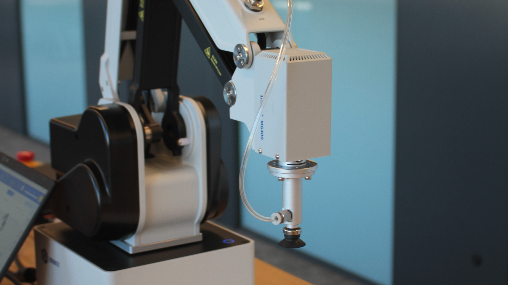
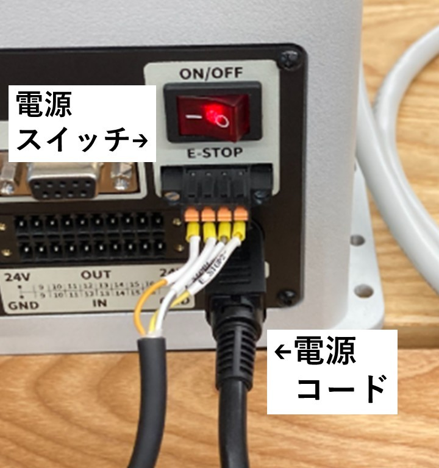
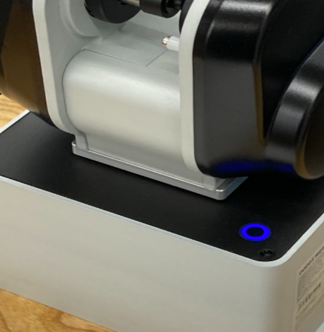
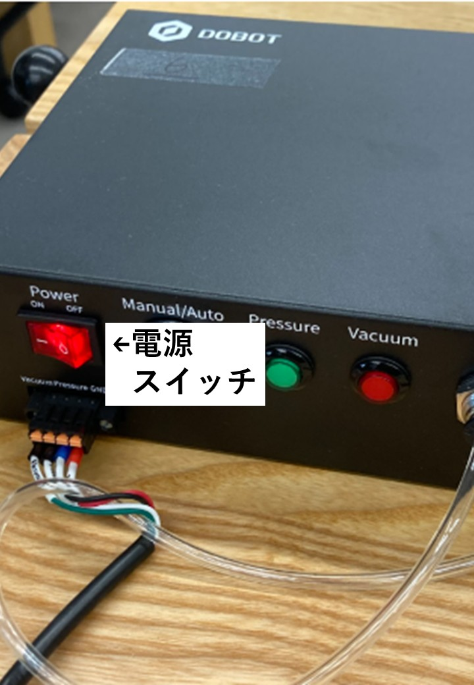
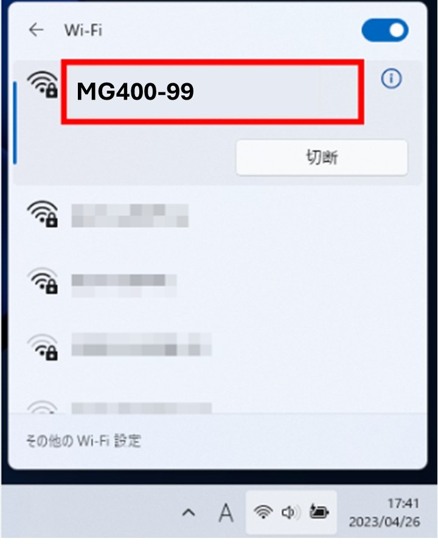
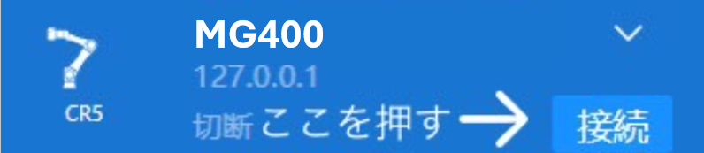

ロボットを安定した平面に設置します。
コンセントに刺した電源ケーブルをアーム本体に接続し、電源スイッチをONにします。
（MG400のランプが、青色に変わったら起動完了）
吸盤用のコンプレッサーの電源もONにします。
事前に以下のボタンから、MG400を制御するソフトをダウンロードする。
DobotStudioをダウンロードする
Windowsの右下にある、Wifiマークを選択し、アームに貼ってある機体番号と同じ番号のWifiに接続する
DobotStudioを起動し、MG400を接続する。
ここまでで、繋がらない場合は、ヘルプを参照
MG400 ロボットマニュアル
このマニュアルは、MG400ロボットの使用方法と安全ガイドラインを説明します。
1. 安全上の注意
ロボットを操作する際は、以下の安全ガイドラインを守ってください。
- ロボットの動作範囲内に、人や支障物が入らないようにしてください。
- 電源を切る際は、必ず指定された手順に従ってください。
- 緊急停止ボタンの位置を事前に確認してください。
2-1. アームのセットアップ手順
以下の手順に従って、ロボットをセットアップしてください。



2-2.PCセットアップ手順
以下の手順に従って、PCをセットアップしてください。
DobotStudioをダウンロードする


3. 基本操作
ロボットの基本操作方法を以下に示します。
- ジョイスティックを使用してロボットを手動で操作します。
- プログラムモードで動作を記録し、自動実行します。
- 緊急停止ボタンを押すと、ロボットが即座に停止します。
4. メンテナンス
ロボットの寿命を延ばすために、定期的なメンテナンスを行ってください。
- 可動部の清掃と潤滑を行います。
- 電源ケーブルや接続部を点検します。
- 異常がある場合は、直ちに使用を中止し、専門家に相談してください。